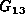
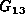
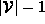
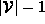

Data Structures and Algorithms
with Object-Oriented Design Patterns in Java
Data Structures and Algorithms
with Object-Oriented Design Patterns in Java
In this section we consider undirected graphs and their subgraphs.
A subgraph of a graph  is any graph
such that and .
In particular, we consider connected undirected graphs
and their minimal subgraphs .
The minimal subgraph of a connected graph is called a spanning tree:
is any graph
such that and .
In particular, we consider connected undirected graphs
and their minimal subgraphs .
The minimal subgraph of a connected graph is called a spanning tree:
Definition (Spanning Tree) Consider a connected, undirected graph. A spanning tree of G is a subgraph of G, say , with the following properties:
- .
- T is connected.
- T is acyclic.
Figure  shows an undirected graph, ,
together with three of its spanning trees.
A spanning tree is called a tree
because every acyclic undirected graph
can be viewed as a general, unordered tree.
Because the edges are undirected,
any vertex may be chosen to serve as the root of the tree.
For example, the spanning tree of
given in Figure (c)
can be viewed as the general, unordered tree
shows an undirected graph, ,
together with three of its spanning trees.
A spanning tree is called a tree
because every acyclic undirected graph
can be viewed as a general, unordered tree.
Because the edges are undirected,
any vertex may be chosen to serve as the root of the tree.
For example, the spanning tree of
given in Figure (c)
can be viewed as the general, unordered tree

Figure: An undirected graph and three spanning trees.
According to Definition ,
a spanning tree is connected.
Therefore, as long as the tree contains more than one vertex,
there can be no vertex with degree zero.
Furthermore, the following theorem guarantees that there is always
at least one vertex with degree one:
Theorem Consider a connected, undirected graph
extbfProof (By contradiction). Assume that there is no vertex in T of degree one. That is, all the vertices in T have degree two or greater. Then by following edges into and out of vertices we can construct a path that is cyclic. But a spanning tree is acyclic--a contradiction. Therefore, a spanning tree always contains at least one vertex of degree one.
According to Definition ,
the edge set of a spanning tree
is a subset of the edges in the spanned graph.
How many edges must a spanning tree have?
The following theorem answers the question:
Theorem Consider a connected, undirected graph
extbfProof (By induction).
We can prove Theorem by induction on  ,
the number of vertices in the graph.
,
the number of vertices in the graph.
Base Case Consider a graph that contains only one node, i.e., . Clearly, the spanning tree for such a graph contains no edges. Since , the theorem is valid.
Inductive Hypothesis
Assume that the number of edges in a spanning tree for a graph
with  has been shown to be 
for .
has been shown to be 
for .
Consider a graph with k+1 vertices
and its spanning tree .
According to Theorem ,
contains at least one vertex of degree one.
Let  be one such vertex
and be the one edge emanating from v in .
be one such vertex
and be the one edge emanating from v in .
Let  be the graph of k nodes obtained by removing v
and its emanating edge from the graph .
That is, .
be the graph of k nodes obtained by removing v
and its emanating edge from the graph .
That is, .
Since is connected, so too is  .
Similarly, since is acyclic, so too is
.
Similarly, since is acyclic, so too is  .
Therefore
.
Therefore  is a spanning tree with k vertices.
By the inductive hypothesis
is a spanning tree with k vertices.
By the inductive hypothesis  has k-1 edges.
Thus, as k edges.
has k-1 edges.
Thus, as k edges.
Therefore, by induction on k,
the spanning tree for a graph with  vertices
contains edges.
vertices
contains edges.
 Copyright © 1998 by Bruno R. Preiss, P.Eng. All rights reserved.
Copyright © 1998 by Bruno R. Preiss, P.Eng. All rights reserved.